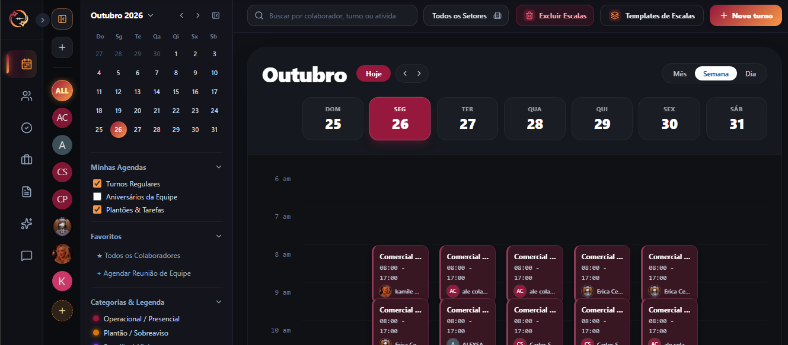

Planejamento de Escalas
Monte escalas de trabalho de forma simples e visual
Monte e distribua grades de horários com total suporte a regimes flexíveis (5x2, 6x1, 12x36). O sistema avisa sobre conflitos de horários, respeita intervalos de descanso da legislação trabalhista e notifica os colaboradores instantaneamente a cada nova publicação.
- Visualização clara mensal, semanal e por setor da empresa
- Gestão simplificada de trocas de plantão com aprovação em 1 clique
- Publicação das escalas para consulta da equipe.
